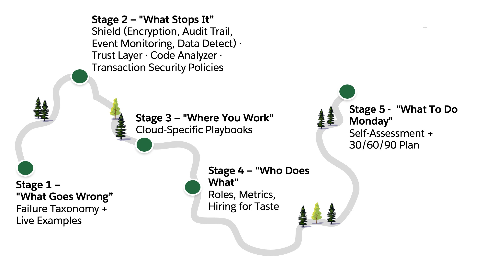

Best Practices for AI-Assisted Development on the Salesforce Platform
This is a governance toolkit for teams shipping AI-assisted code on Salesforce — built to be used, not just read. Inside: a failure taxonomy naming exactly what goes wrong when AI writes your Apex, Flows, and agent logic. A five-pillar control model mapped to platform capabilities. Cloud-specific playbooks for Sales, Service, Marketing, Data Cloud, Agentforce, and MuleSoft. And the organizational layer most frameworks ignore — how roles, metrics, and hiring change when AI writes most of the code.
Read front-to-back in an hour, or jump to your cloud and work backward when you need context. The last page hands you a self-assessment and a 30/60/90 day activation plan so you know exactly where to start Monday morning.

On most platforms, you'd have to build governance from scratch. On Salesforce, the guardrails are already baked into the architecture — they just need to be activated. Here's what's already there:
A two-layer security model that AI can't accidentally bypass — if you enforce it. Salesforce governs access through both record-level visibility (sharing rules, role hierarchies) and field-level visibility (CRUD/FLS). When developers use WITH USER_MODE and AccessLevel.USER_MODE, the platform enforces both layers at the database boundary. The AI doesn't need to "remember" security — it's pushed into the query layer itself.
Governor limits that act as automatic circuit breakers. On other platforms, bad AI-generated code can run wild in production for hours before anyone notices. On Salesforce, governor limits stop runaway code at the transaction boundary. Bulkification failures, infinite loops, and resource-hungry patterns hit a hard wall before they can do real damage. That's not a constraint — it's a safety net.
A Trust Layer with built-in injection defense, toxicity detection, and audit trails. Agentforce doesn't just call an LLM and hope for the best. The Trust Layer sits between the agent and the model — masking sensitive data, detecting prompt injection, evaluating output quality, and logging everything. This isn't something you bolt on after the fact. It's the architecture.
Bounded autonomy as a first-class design pattern. confirmationRequired, Agent Script, Trusted URLs, action catalogs — these aren't afterthoughts. They're how you give an agent enough power to be useful while preventing it from doing things you didn't intend. The platform was designed for this tension between autonomy and control.
Real-time blocking, not after-the-fact alerting. Transaction Security Policies can block a risky action the millisecond it happens — before data leaves the org. Most third-party security tools watch from outside and tell you what happened yesterday. Native controls operate inside the transaction.
Multi-cloud governance from a single control plane. Security Center, Event Monitoring, Data Detect, Platform Encryption, Data Spaces — these span the entire Salesforce estate. When your AI-assisted development touches Sales Cloud, Service Cloud, Data Cloud, and Agentforce simultaneously (and it will), the governance layer already spans all of them.
Three layers. Understand the risk, apply the controls, then operate sustainably. Each section stands alone — pick the one that matters most to you and go deep.
What vibe coding is, why it changes the risk equation, and why 2026 is the inflection point. 25% of YC startups are shipping 95% AI-generated code. Cursor hit $100M ARR in 12 months. Microsoft reports 20-30% machine-authored production code. The velocity is real. The governance isn't keeping up.
Failures in the agentic SDLC are rarely syntax errors. They're semantic — the code runs exactly as written but violates the designer's intent. Four vectors: logic hallucination (code works, business rule is wrong), security bypass (FLS/CRUD/sharing ignored), prompt injection (data becomes instruction), and state corruption (automation sprawl, haunted databases). Plus a fifth: comprehension debt — when your team can't debug what the AI wrote at 3 AM.
The full control model. Each pillar maps directly to Salesforce platform capabilities you can activate today.
Four before-and-after demonstrations. Each one maps to a failure mode from the taxonomy. The "bad" version is what the AI produces when unconstrained. The "good" version is what you get when you apply constraint architecture before generation. This is the difference between passing code through and governing it.
Cloud-by-cloud governance guidance. Each page covers: primary risk, dominant dev paradigm, mandatory guardrails, and a concrete artifact you can implement.
Vibe coding is now a required skill. How do you hire and develop people who aren't just citizen developers turned overnight into AI-drunk coders? Redefined roles (juniors are curators, seniors are constraint architects), a scorecard that measures output quality not output speed, and an interview approach for the post-whiteboarding era.
Every governance control mapped to its corresponding Salesforce platform primitive. The shared responsibility model for the agentic era — what the platform enforces automatically vs. what your team must configure.
A five-level self-assessment calibrated to Salesforce orgs, followed by a 90-day execution plan: CI/CD gates by day 30, bounded agent permissions by day 60, org-wide operating rhythm by day 90.
If you're a CIO/CTO and you have 10 minutes: read the three soundbites above, then jump to the Maturity Model. That's where you'll find out where your org actually sits and what the first 90 days look like.
If you're an architect or security leader: The Governance Model and Platform as Governance Layer are your primary references. The per-product pages give you implementation specifics for your cloud.
If you run an engineering team or CoE: Start with People & Organization. That's where the scorecard, career architecture, and interview redesign live. Then look at the illustrative examples for patterns your team can adopt as standards.
If you own release management or DevOps: The Build-time controls in the Governance Model are your section. Then the 30/60/90 plan gives you the specific CI/CD gates to implement by month.
1. The Salesforce platform fully supports vibe coding.
Headless development, metadata-driven architecture, Agentforce, Flow, Data Cloud, MuleSoft — the platform is built for intent-driven, AI-assisted development at scale. This isn't a workaround. It's how the platform is designed to be used.
2. Governance is already baked in — it just needs to be activated.
FLS and CRUD enforcement at the database layer. Transaction Security Policies that block in real time. Event Monitoring. Platform Encryption. Code Analyzer in CI/CD. Trust Layer for agents. These aren't add-ons — they're native primitives waiting to be configured.
3. It is safer to build applications and agents on Salesforce.
Governor limits act as circuit breakers. Bounded autonomy constrains agent execution. The Trust Layer intercepts prompt injection before it reaches the model. Multi-tenant isolation means one org's failure can't cascade. The architecture was designed for the exact tension between speed and safety that vibe coding creates.
As a small experiment, I put together a rules file that nudges AI coding tools to be a bit more careful when generating Salesforce code. It's not a governance solution — the real governance comes from the platform controls described throughout this framework (Shield, Code Analyzer, Trust Layer, Transaction Security). This is just a lightweight way to get the AI to remember things like WITH USER_MODE and bulk-safety without the developer having to ask every time. See the example →
It won't catch complex vulnerabilities (that's Code Analyzer), won't block risky actions at runtime (that's Transaction Security and platform controls), and can't validate business logic correctness. It just makes the AI slightly less likely to generate the obvious mistakes. The heavy lifting is still done by the platform.
The real governance is in the platform — Shield, Code Analyzer, Trust Layer, bounded autonomy. A rules file just helps the AI avoid the obvious pitfalls at generation time.
VibeOps Framework — AI Development Governance for the Salesforce Platform
Built from publicly available research, platform documentation, and field experience. Designed as actionable thought leadership for enterprise customers navigating AI-assisted development at scale.